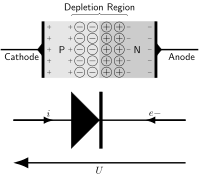

full-test.pyfull-test.py
# A source code comment
#?# A comment that must not appear in the documentation
foo = 1
#!# ==========================
#!# A Restructuredtext Title
#!# ==========================
foo = 1
#!#
#!# Some reStructuredText contents
#!#
foo = 1
# Insert the output of the following python code
print(foo)
#o#
foo = 1
# Hidden Python code
#h# value = 123 * 3
foo = 1
#!# Format RST content with current locals dictionary using @@<<@@...@@>>@@ instead of {...}.
#!#
#!# .. math::
#!#
#!# I_d = @<@value@>@ I_s \left( e^{\frac{V_d}{n V_T}} - 1 \right)
# Add the file content as literal block
#itxt# kicad-pyspice-example.cir
# Add a Python file as a literal block
#i# RingModulator.py
# Insert an image
#lfig# kicad-pyspice-example.sch.svg
# Insert Circuit_macros diagram
#cm# circuit.m4
# Insert Tikz figure
#tz# diode.tex
import numpy as np
import matplotlib.pyplot as plt
figure = plt.figure(1, (20, 10))
x = np.arange(1, 10, .1)
y = np.sin(x)
plt.plot(x, y)
# Insert a Matplotlib figure
#fig# save_figure(figure, 'my-figure.png')
foo = 1
# A source code comment
foo = 1
6.1.1. A Restructuredtext Title¶
foo = 1
Some reStructuredText contents
foo = 1
# Insert the output of the following python code
print(foo)
1
foo = 1
# Hidden Python code
foo = 1
Format RST content with current locals dictionary using @<@…@>@ instead of {…}.
\[I_d = 369 I_s \left( e^{\frac{V_d}{n V_T}} - 1 \right)\]
# Add the file content as literal block
* /home/gv/fabrice/developpement/PySpice/examples/spice-parser/kicad-pyspice-example/kicad-pyspice-example.cir
* EESchema Netlist Version 1.1 (Spice format) creation date: dim. 29 nov. 2015 18:04:33 CET
* To exclude a component from the Spice Netlist add [Spice_Netlist_Enabled] user FIELD set to: N
* To reorder the component spice node sequence add [Spice_Node_Sequence] user FIELD and define sequence: 2,1,0
* Sheet Name: /
X3 7 6 5 4 1 Opamp
X1 2 5 5 JackIn
X4 7 3 5 JackOut
R2 6 7 50K
R1 2 6 2K
R3 5 3 2K
X2 4 5 1 PowerIn
.end
# Add a Python file as a literal block
RingModulator.pyRingModulator.py
#skip#
####################################################################################################
from PySpice.Spice.Netlist import SubCircuitFactory
from PySpice.Unit import *
####################################################################################################
class RingModulator(SubCircuitFactory):
__name__ = 'RingModulator'
__nodes__ = ('input_plus', 'input_minus',
'carrier_plus', 'carrier_minus',
'output_plus', 'output_minus')
##############################################
def __init__(self,
outer_inductance,
inner_inductance,
coupling,
diode_model,
):
super().__init__()
input_inductor = self.L('input', 'input_plus', 'input_minus', outer_inductance)
top_inductor = self.L('input_top', 'input_top', 'carrier_plus', inner_inductance)
bottom_inductor = self.L('input_bottom', 'carrier_plus', 'input_bottom', inner_inductance)
self.CoupledInductor('input_top', input_inductor.name, top_inductor.name, coupling)
self.CoupledInductor('input_bottom', input_inductor.name, bottom_inductor.name, coupling)
self.X('D1', diode_model, 'input_top', 'output_top')
self.X('D2', diode_model, 'output_top', 'input_bottom')
self.X('D3', diode_model, 'input_bottom', 'output_bottom')
self.X('D4', diode_model, 'output_bottom', 'input_top')
top_inductor = self.L('output_top', 'output_top', 'carrier_minus', inner_inductance)
bottom_inductor = self.L('output_bottom', 'carrier_minus', 'output_bottom', inner_inductance)
output_inductor = self.L('output', 'output_plus', 'output_minus', outer_inductance)
self.CoupledInductor('output_top', output_inductor.name, top_inductor.name, coupling)
self.CoupledInductor('output_bottom', output_inductor.name, bottom_inductor.name, coupling)
# Insert an image

# Insert Circuit_macros diagram
# Insert Tikz figure

import numpy as np
import matplotlib.pyplot as plt
figure = plt.figure(1, (20, 10))
x = np.arange(1, 10, .1)
y = np.sin(x)
plt.plot(x, y)
# Insert a Matplotlib figure
foo = 1